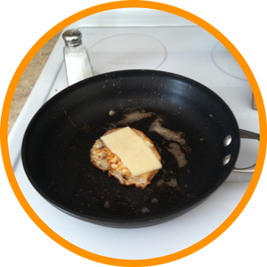
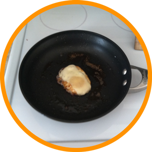
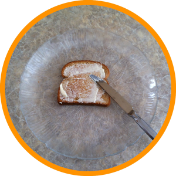

This is a very easy recipe to make a quick and protein-filled snack. But it's not very healthy. You should probably consider getting some quinoa.
Servings: 1-2
Prep Time: 15 minutes
| Steps | Directions | Image |
|---|---|---|
| Step 1 | Heat pan on stovetop on medium-high heat. |
|
| Step 2 | Melt ½ TBS butter in pan. Cooking spray or mayonnaise can be substituted. |
|
| Step 3 | Once the butter is melted, twist pan to coat. Crack 1 to 2 eggs in heated pan. |
|
| Step 4 | While egg(s) cook, begin toasting 2 to 4 pieces of bread. If you prefer open-faced sandwhiches like this one, 1 to 2 slices will suffice. |
|
| Step 5 | Egg should complete cooking around 5 minutes. Flip. A common tool for flipping eggs is a spatula, a broad, flat, flexible blade of metal or plastic used to mix, spread, and lift material. |
|
| Step 6 | Near the end of cooking, add a ¼ tsp of salt and a small slice of cheese. |
 |
| Step 7 |
You egg is complete once the cheese is melted. Note: The FDA states in Egg Saftey: What You Need to Know that in order to prevent illness from bacteria you must: keep eggs refrigerated, cook eggs until yolks are firm, and cook foods containing eggs thoroughly. |
 |
| Step 8 | Once your toast is done and cooled, spread on a thin layer of mustard, mayonnaise, or both. |
 |
| Step 9 | "Plate" your cheesy fried egg, and... |
|
| Step 10 | ...Enjoy! |